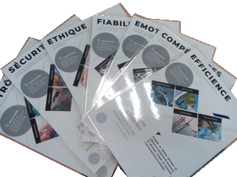

Resumé : Conception d'un snowskate. Les remontées étaient fermées, coranus oblige, alors on monte en raquette et on descend sur cet objet fou. Après 1 descente on l'apprivoise (si on a un peu fait de skate ou de snow). Fait avec un snowblade de 88cm acheté sur leboncoin 8€ et un deck de petit cruiser en bambou de 60cm. 8 inserts, quelques vis, une planche à découper ikea en bambou et un peu de wax sur le deck plus tard c'est parti...la vidéo montre les essais de la 1ère journée, on gagne assez vite en stabilité et en maitrise. Ne pas oublier un leash car c'est strapless !
Techno : travail bambou, scie, perceuse.
mots clés :Low Tech, récup, glisse, liberty.
Money - Time : 10€ - 1 apres-midi
-
-
2021
Resumé : Conception d'un NVEI tout terrain, ultra-réparable et abordable pour les utilisateurs en manque de fun dans leur mobilité. Ce projet est un travail d'innovation sur plusieurs années. Je l'aborde avec une vision très long terme et sous le paradigme de l'effectuation en y consacrant en moyenne qu'une journée par mois et quelques dollars. Les défis sont techniques (partenariat avec le fablab le Boc@l de Chemillé), portées sur le lowtech (conception ultra-réparable) et sur un business model novateur (le consommateur devient concepteur de son produit). Dans ce sens je positionne ce travail comme un projet social visant à redistribuer les cartes de la consommation. Ce projet à par ailleurs accueilli : Mélissa, Arthur et Pierre, des étudiants de 5a de Polytech-Angers en 2020.
Techno : Arduino, Découpeuse laser, fraiseuse numérique, C, CAO.
mots clés : Skateboard, DIY, Tout terrain, Frugale, low-cost, low tech.
-
Resumé : Conception d'un distributeur de spiruline pour boisson énergisante. En collaboration avec Siti, Simon et Clément, élèves en 5a de Polytech Angers 2020. J'ai eu la chance d'encadrer ces étudiants ingénieurs qui ont maturé ce side-project de l'idée jusqu'à la preuve de concept. Leurs travaux se sont portés sur l'emergence d'une problématique à la consommation de l'algue par le consommateur au moyen de séances de créativité jusqu'à la réalisation from scratch d'un prototype de distributeur et incubateur autonome de spiruline. L'idée principale est d'utiliser l'image de la machine a café traditionnelle pour améliorer l'image des boissons à l'algue (spiruline-cyanobactérie) et favoriser la consommation de ce super aliment dans son format le plus frais.
Techno : Arduino, travail bois, impression 3D, CAO, User expérience.
mots clés : Spiruline, innovation, UX, Ergonomie, Démocratisation, Low Tech.
-
2020
Resumé : Bloqué en France pour les vacs 2020 '--. L'idée était de s'inspirer du mouvement teardrop des années 30 aux états-unis. A cette époque il était commun de construire sur la base d'une remorque sa mini-caravane pour toutes sortes d'activités. De notre côté nous l'avons utilisé pendant 3 semaines sur un road-trip en France. C'est assez satisfaisant de voir ce mini logement hyper pratique, aller partout, suciter l'intéret et nous abriter des éléments. Il me tarde de l'améliorer pour nos prochains barroudes.
Techno : CAO, Soudure à l'arc, Machine outil (perceuse, scie sauteuse, etc).
mots clés : teardrop, récupération, panneau solaire, voyage, cage de faraday.
Money - Time : 700€ - 1 mois
-
Resumé : Fermeture des salles de sport/Gymnase 2020 '--. No pain, no Gain. édit Mars 2021 : c'est toujours fermé !
Techno : papier, feuille, ciseaux, Soudure à l'arc
mots clés : Métal, béton, Poids du corps, traction, tiboInShape.
Money - Time : 150€ - 1 semaine
-
Resumé : Récupération & DIY pour meubler salon. Elle était la avant nous et nous enterrera.
Techno : Machine à coudre, machine outils (scie lapidaire, perceuse, etc.)
mots clés : Coussins, Baignoire, fauteuil, fonte.
Money - Time : 50€ - 4 jours
-
Resumé : Remplacement escalier & garde corps.
Techno : Soudure à l'arc, perceuse.
mots clés : escalier, design, canard.
Money - Time : 500€ - 7 jours
-
2019
Resumé : Biofeedback et interface cerveaux-ordinateur : application à la RV : Scalian, 2019
Techno : Réalité virtuelle, Unity, EEG low cost,
mots clés : biofeedback, HCI, electro-encephalogramme, immersion.
Le lab / Article / Thomas Huraux
-
Resumé : Conception monde virtuel pour évaluation de l'acceptabilité d'outils technologiques au travail : Scalian, 2019
Techno : Réalité virtuelle, Unity, ergonomie cognitive
mots clés : Interaction, objet connecté, acceptabilité.
Le lab / Thomas Huraux
-
Resumé : Augmentation du poste de travail par la réalité virtuel et l'exploration de paramètres : Scalian, 2018
Techno : Réalité virtuelle, Unity, HTC vive, ergonomie cognitive
mots clés : Interaction, Embodiement, Emotion, Mouvement.
Le lab / Article / Thomas Huraux
-
Resumé : Augmentation des opérateurs en combinant réalité augmentée et géolocalisation UWB : Scalian, 2018
Techno : Ultrawideband, HoloLens, Unity
mots clés : Géolocalisation, Réalité augmentée
Le lab
-
2018
Resumé : Augmentation du poste de travail par une méthodologie innovante impliquant les opérateurs. exemple d'une partie de la méthodologie : carte idéation / Scalian, 2018
Techno : Ergonomie cognitive, crayon, post-it...
mots clés : User-expérience, User centered design.
Le lab
 -
2015
Resumé : Création d'une dynamo sur la base d'un ventilateur de PC - AAP Prematuration Etudiant PEIPS 2015.
Techno : Impression 3D, CAO
mots clés : Low-tech, frugale, recyclé.
Money - Time : 1500€ - 1 mois
-
Resumé : Oeuvre interactive en partenariat avec un designer pour le festival Arts/Sciences Curiositas édition 2015.
Techno : Kinect, C++, irrlicht, Arduino, Blender
mots clés : Light, Interaction, DeepCamera, IOT, Blackhole.
En savoir plus / Artiste
-
2014
Resumé : Oeuvre interactive en partenariat avec une troupe d'artistes-scénographes et sous la direction du e-sas pour le festival Arts/Sciences Curiositas édition 2014.
Techno : Kinect, C++, faceReader, Blender
mots clés : Scénography, Heart, Interaction, DeepCamera, protheusEffect, saint valentin japonais.
En savoir plus / Artistes-Scénographes / e-sas
-
2013
Resumé : Thèse 2012-2015 : Interaction avec des personnages virtuels.
Techno : Capture du mouvement, irrlicht, Blender, C++, et tellement d'autres...
mots clés : Interaction, Embodiement, Emotion, Mouvement.
Thèse / Laboratoire